Maps, social media graphics, and article graphics I created for the Atlanta Journal-Constitution.
Maps
Locator Map
Breaking news · Illustrator
One of my roles was to create locator maps for breaking news stories. Depending on the story I used Adobe Illustrator or DataWrapper. For this graphic I used Adobe Illustrator to add labels and styling to a blank Google Maps image.
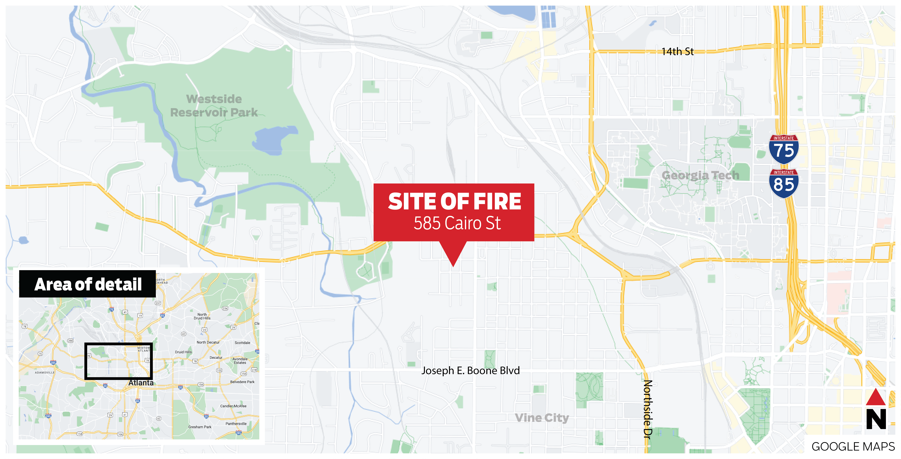
Social
Braves Scoreboard
Instagram · Photoshop
I created this scoreboard to show the Braves' winning streak in a visually interesting way. I recreated a baseball scoreboard from scratch in Photoshop and included opposing teams and scores. It was featured in several articles and on the AJC Instagram.
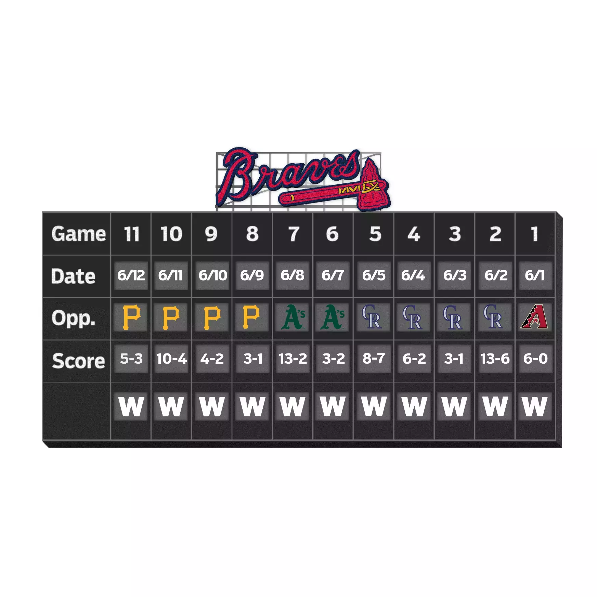
Breeze Card
Instagram · Photoshop
I created this graphic for the AJC Instagram page. I edited an image of a MARTA Breeze card using Adobe Photoshop to change the "Breeze" logo to say "Free?"
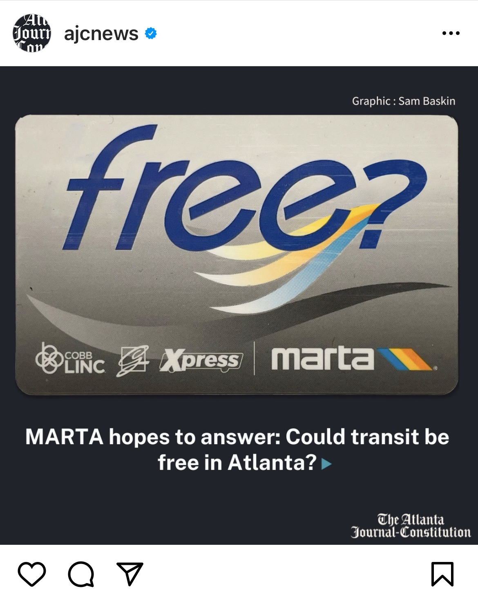
Gas Prices
Instagram · After Effects
I created this animation as a promotional post for an article on gas prices. I used Adobe Photoshop and Illustrator. I used heavily-edited photos I took at gas stations around Atlanta to create the board, and then animated the moving numbers and zoom in After Effects. View the post on Instagram.
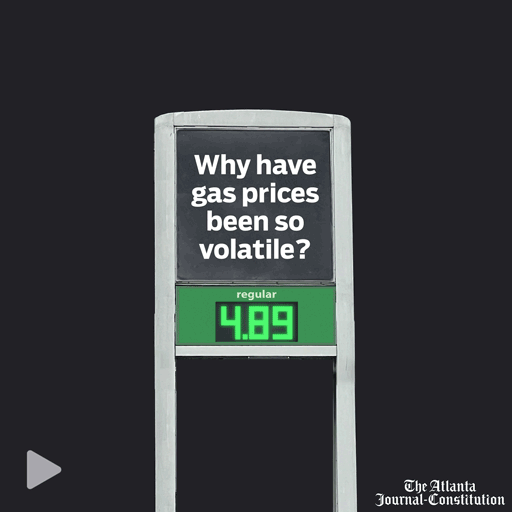
Natural Gas Leaks in Georgia
Instagram · Infographic
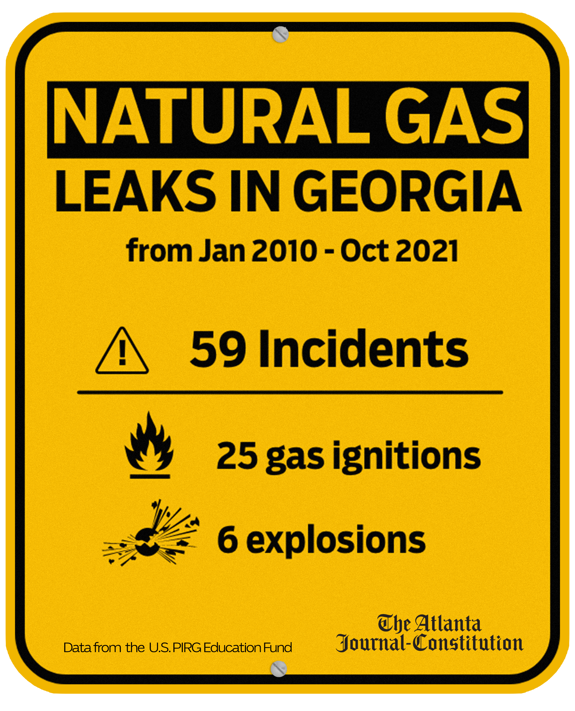
Temperature Increase
Print, web & social · DataWrapper · Illustrator
This graphic was adapted for the AJC's print, web and social channels. It visualizes temperature increase data from a report released in 2022. I used DataWrapper to visualize the data on a county map of Georgia and then heavily stylized and formatted it using Adobe Illustrator.
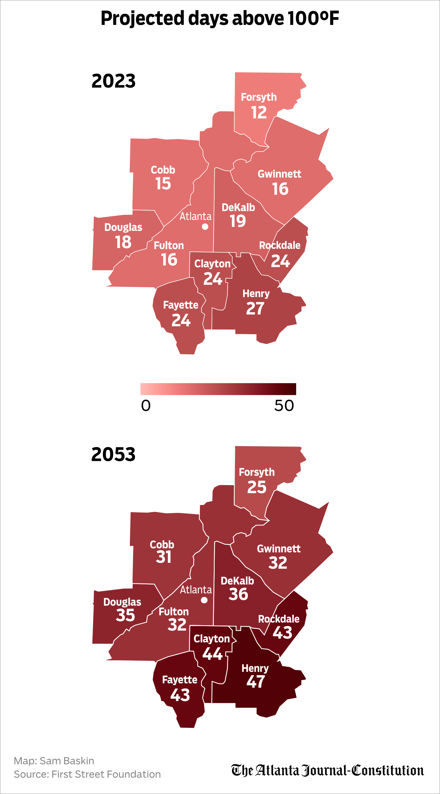
Article Graphics
Climate Solutions
Pitched, written & designed · Photoshop
I pitched, wrote and designed this article. I felt that the climate series was focusing too much on the individual rather than more impactful systemic issues, so I pitched a story on what policies and infrastructure the city of Atlanta could implement. I interviewed several sustainability experts to find the five most impactful solutions.
The graphics were meant to contrast existing systems and new solutions. I used vectors to show existing infrastructure and lined those up with image cutouts of the solutions. I created the icons using AJC photos and photos I took myself which I cut out and edited in Photoshop.
I developed a style for a series of evergreen articles on climate change for the AJC. Some of the articles were to be written and published after I finished my internship, so I created a brief style guide to help the digital storytelling team create new content that matched the graphics I had already created. The style uses image cutouts, vectors, and a custom highlighter effect I created.
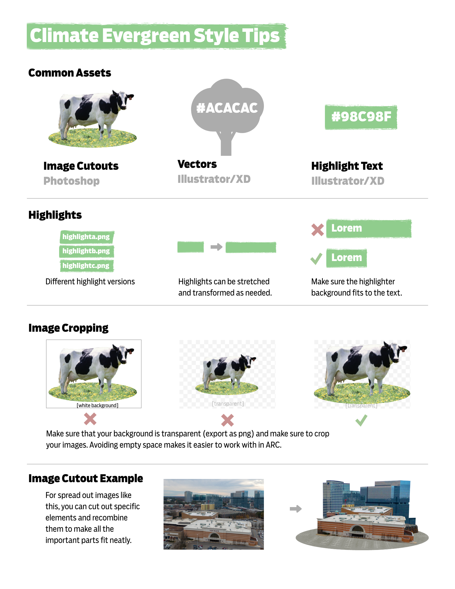
Rising Temperature Lead Image
Lead image · Climate series
I created the lead image for this article, using the climate style guide I created. I overlayed a vector of Atlanta temperature data over a satellite image cutout of Georgia. (Mock-up showing only the graphics I created.)
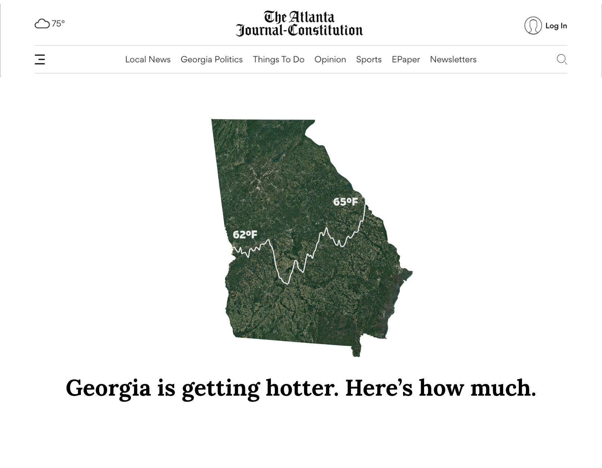
Heat Risk Lead Image
Lead image · Climate series
I created the lead image for this article, using the climate style guide I created. Using Photoshop, I created a condensed Atlanta skyline from photos I took. Then I applied a wave effect to simulate heat distortion. (Mock-up showing only the graphics I created.)
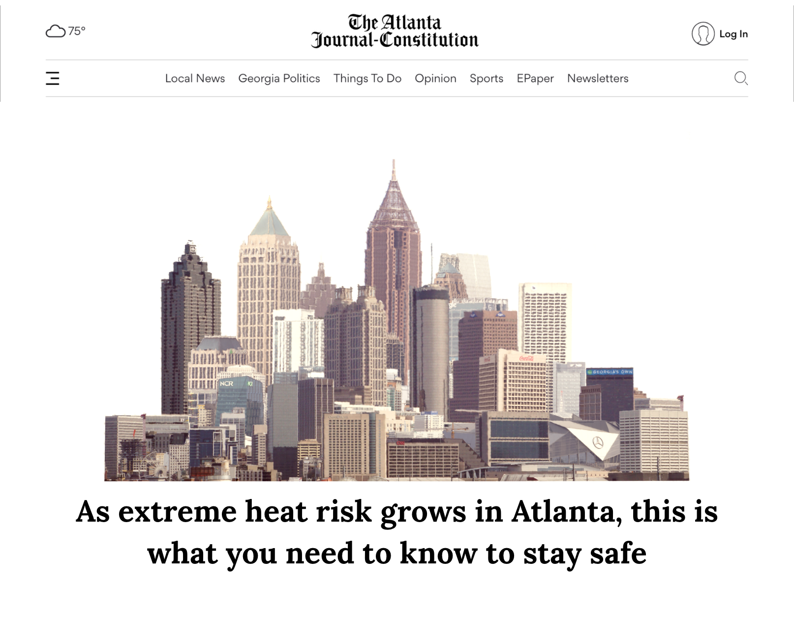
Georgia Economy
Lead & section graphics · Photoshop
I designed graphics for the featured image and each section of this alternate format article. I made the graphics by cutting out, editing, and compositing in-house photos to fit the theme of each section. (Mock-up showing only the graphics I created.)
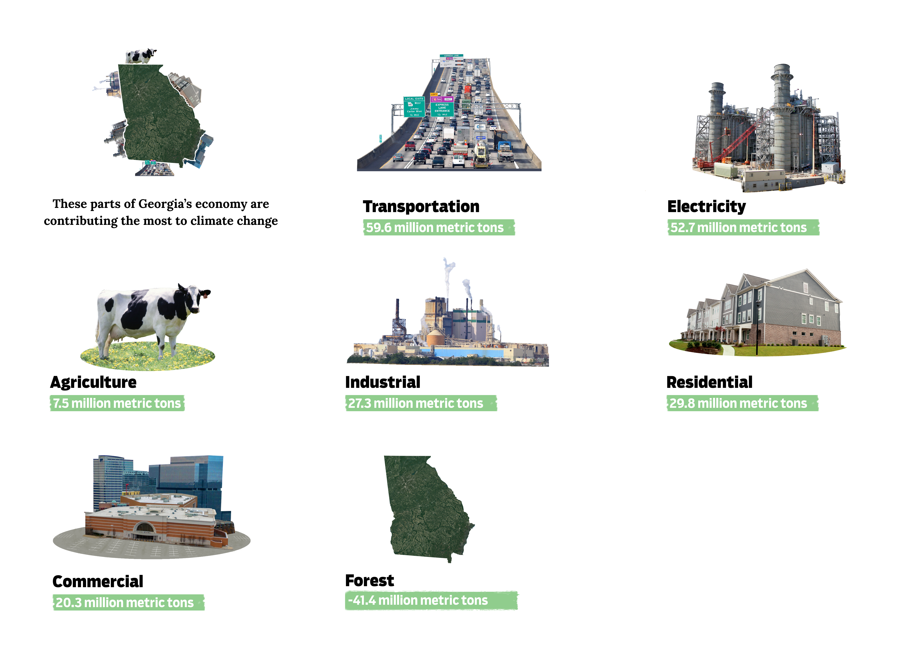
Concepts
Supreme Court Concept
Social animation storyboard
I created this storyboard as a concept before starting at the AJC to demonstrate the style I wanted to create for data graphics. This animation would be used for articles about the Supreme Court that featured data. Specifically, it would be used as a social media graphic since it's designed to be eye-catching and sharable. The animation would start with a static shot of the Supreme Court, then the columns move to form a bar chart.
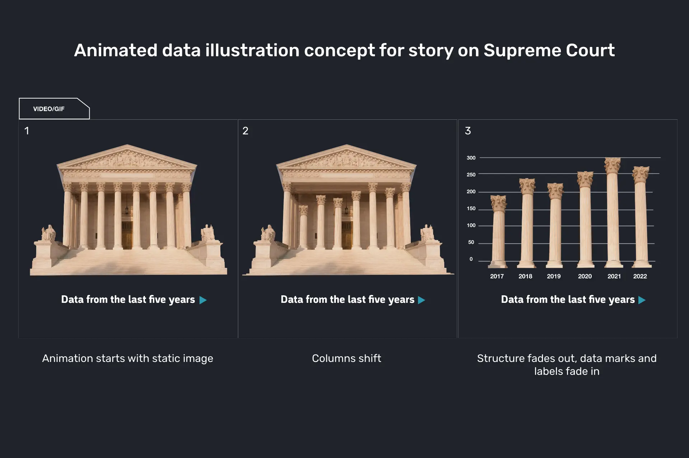
Pothole Bar Graph Concept
Social data graphic
I created this as a concept before starting at the AJC to demonstrate the style I wanted to create for data graphics. I wanted to make a graphic that conveyed information but also would be visually interesting and very sharable. In Atlanta, the city is notorious for using steel plates to cover potholes. I took pictures of steel plates, and used those to create the bars for this graph.